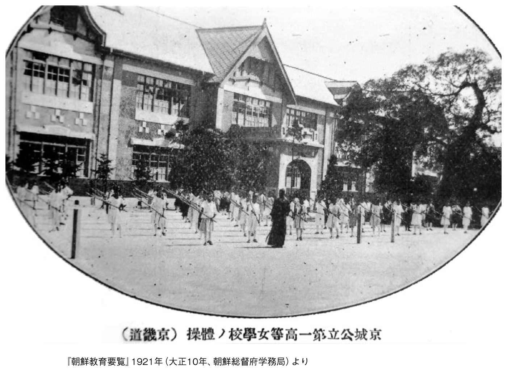
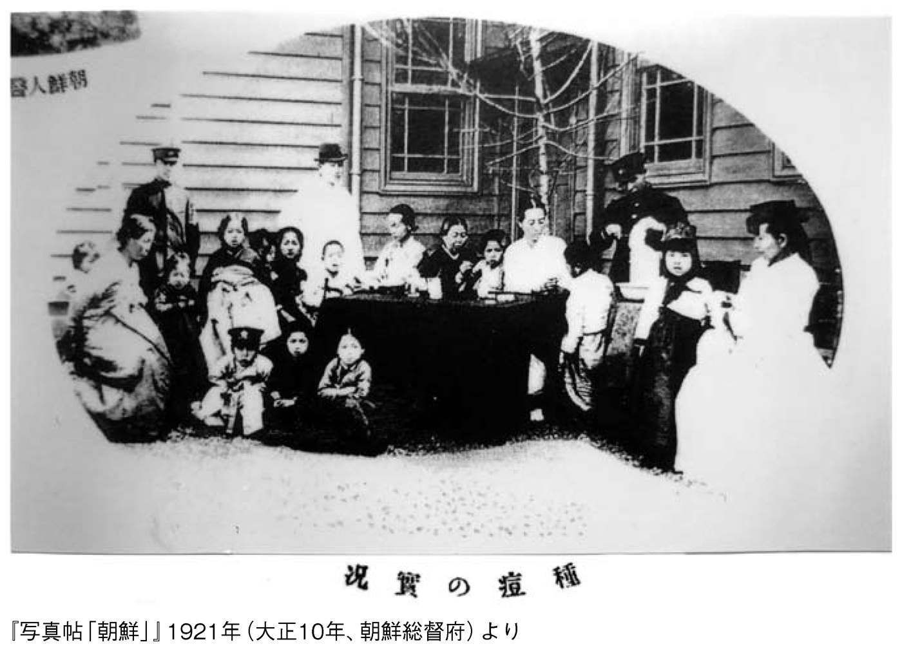
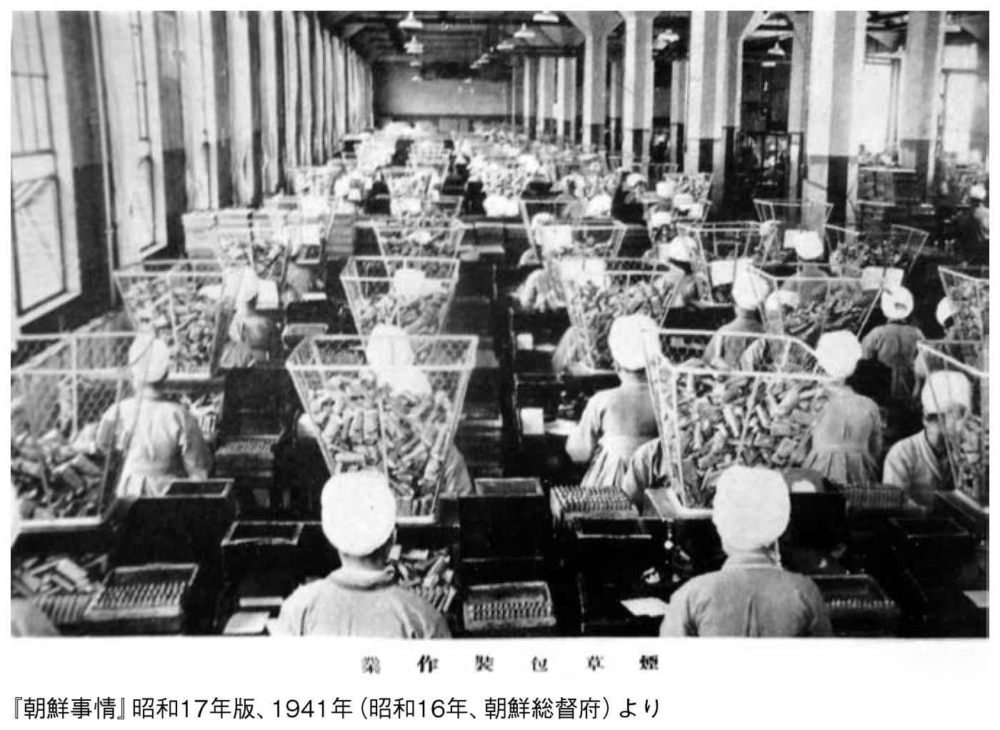
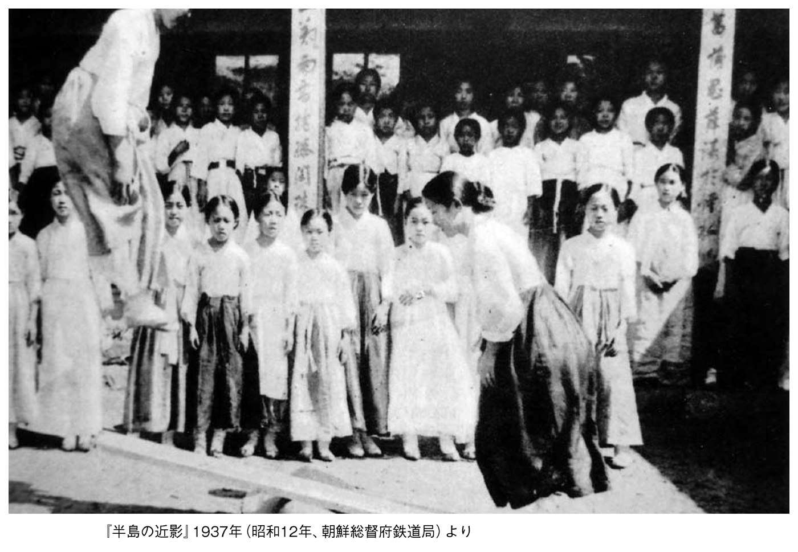
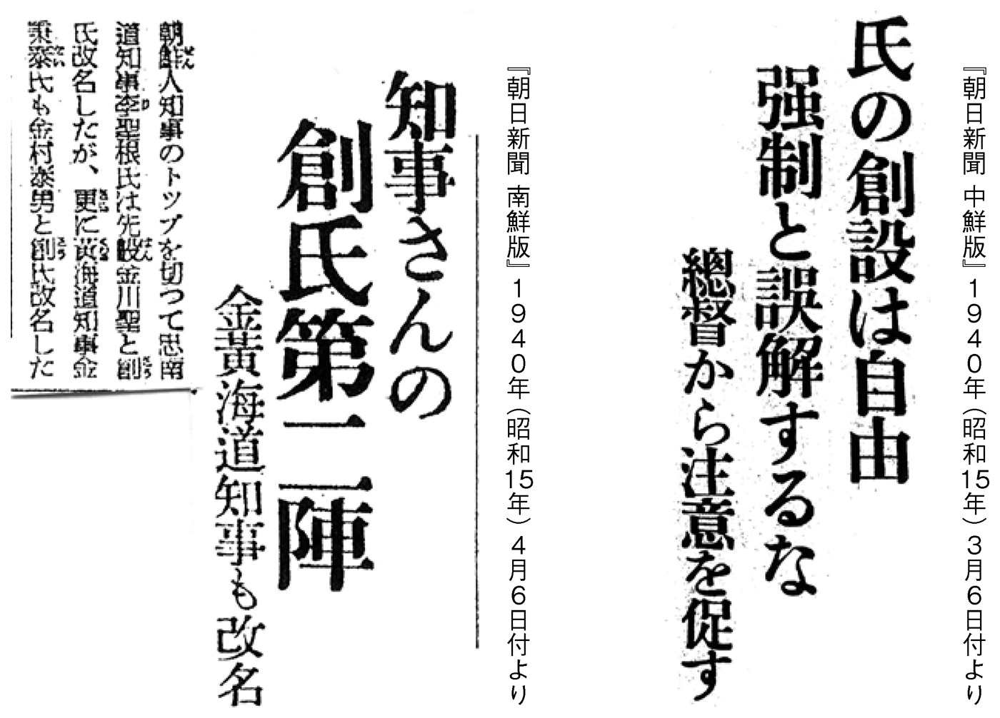
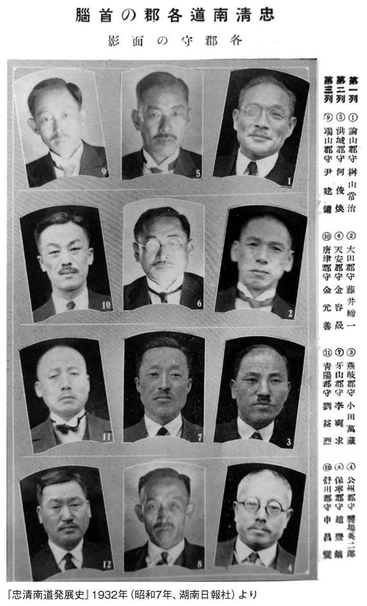

| ひと目でわかる「日韓併合」時代の真実 | |
| 水間 政憲 | |
| (2017) | |

ひと目でわかる「日韓併合」時代の真実
水間政憲
朝鮮半島への賠償問題は、日本は交戦国でなかったので国際法では発生しません。ところが、韓国には国交正常化した一九六五年、「日韓基本条約」締結のとき、外貨残高約二億ドルの時代に経済協定を調印し、「政府無償贈与」として三億ドル（当時のレートで一九一五億円）をプレゼントしています。
その協定第二条では、請求権に関して「完全かつ最終的に解決......締結国及びその国民に対するすべての請求権......いかなる主張もすることができない」と規定してあります。ちなみに戦禍を免れた朝鮮半島には、日本が国際法上、正当に請求できる資産として、現在の物価指数で約一四兆円分も残していたのです。
賠償問題に関して、マッカーサー連合国軍最高司令官が、次のように明示的な発言を残しています。
「記者団の一人は、マ元帥に対し賠償問題に関する論争が平和会議を遅らせはしないかと質問したが、マ元帥はほとんどあざ笑うように〝それは事実上すでに解決している〟と答え、さらに次のように説明した。（中略）日本の富のすべては十二ないし十五の家族の手中に流れ込んだ。これらの家族はその富を日本内部に保持しておくよりは、むしろ植民地のなかに注ぎこんだ。（中略）この全部はすでに取り戻され現在賠償の一部になっている。これらの資産の多数が破壊されたことは事実であるが、取り戻し得る資産の最大のものである（以下略）」
（高桑幸吉『マッカーサーの新聞検閲 掲載禁止・削除になった新聞記事』より）
国際社会においてライバルになりうる国家を衰退させるには、武力による弾圧よりその国の正統な歴史を奪うことで、それが実際に行われてきました。それを見習うかのように、我が国に対して中国と韓国が現在、歴史の収奪を実践しています。
パール極東国際軍事裁判（東京裁判）インド代表判事は、一九五二年に再来日したとき、田中正明氏（評論家・歌人）に「東京裁判の影響は、原子爆弾の被害よりも甚大だ」と慨嘆されていました。
知の巨人・福澤諭吉は、朝鮮を支援した経験を踏まえて発表した「脱亜論」で、恩知らずな朝鮮に対して（中華思想・中国も含む）「悪友とつき合うと我が国の為にならない」と唱えています。それから一三〇年たっても、いまだに我が国の政治家や経済人は、中国と韓国に幻想を抱いているようです。それは、東京裁判の「日本罪悪史観」を正統な歴史と錯覚して、一段と自虐的になっているがゆえの行動なのです。
そんな中にあって、明治政府の重鎮・大久保利通を先祖にもつ麻生太郎氏は、明治政府以来一〇〇年間の国家戦略の間違いに気づいたかのように、二〇〇七年、総理大臣に就任する前に『自由と繁栄の孤』（法の支配と言論の自由の共通認識）を上梓されました。その書が一過性のものでなかったことは、このたび副総理兼財務大臣に就任早々、ミャンマーを訪問されたことに表れています。
これから百年間の国家戦略は「新脱亜論」であり、それはまさに「自由と繁栄の孤」の国々と連携することを意味しているのです。
本書は、客観的に「歴史を直視」できる読者諸賢が直接、一次史料から判断していただけるように、できるかぎり「日韓合邦」時代の史料を優先して掲載しました。
平成二五年一月
近現代史研究家 水間政憲
ひと目でわかる「日韓併合」時代の真実 目次
総督府時代以前の朝鮮は巫俗（シャーマニズム）がはびこる前近代的な社会だった
装 丁：印牧真和
装丁画：『アサヒグラフ』一九四〇年七月二〇日号より「朝鮮団扇」（大邱）
■本書に掲載された写真の無断転載を禁じます。
朝鮮半島は、歴史上約一〇〇〇回以上も中国から侵略され、長い間、中国の属国にされていたのですが、我が国が日清戦争で勝利したとき、宗主国中国に朝鮮の独立を認めさせました。
また朝鮮半島には、中国だけでなく軍事大国ロシアの潜在的脅威も大きく、日露戦争で我が国が勝利したことで、朝鮮人が「合邦」を希望する電報を、日本へ大量に打つことになったのです。
次の朝鮮人団体「一進会」（一〇〇万人）李容九会長の訳文を見ると、「その時々の勢力の強い者に付き従う」事大主義が具現化しています。
同訳文の冒頭に、「弊会が『日韓合邦』の議を提出せしば、決して独断的に出したものではなく、各階級との連絡を通し、一般人民の不同意すくなきを確かめ......」て、決行したことを綴っています。
日本政府は一九一〇年（明治四十三年）八月二十九日、「韓国併合に関する宣言」を以下の一〇カ国「ドイツ、米国、オーストリア・ハンガリー帝国、ベルギー、清国（中国）、デンマーク、フランス、英国、イタリア、ロシア」に発し、承認されていました（明治四十三年八月二十九日、統監・子爵 寺内正毅）。
当時の朝鮮半島は、ロシア・中国が自らの勢力拡大に跋扈していました。一八八四年（明治一七年）一二月、中国（清国）が朝鮮に軍隊を派兵し、独立党のクーデターを潰した勢いで日本公使館を焼き払い、婦女子など多くの日本居留民が惨殺されました（「甲申事件」）。ちなみに福澤諭吉が「脱亜論」を『時事新報』に発表したのは、この事件の直後の一八八五年（明治十八年）でした。
我が国は日清戦争に勝利するも、一八九五年（明治二八年）三月、国辱的な「三国干渉」を押しつけられました。それを見て親露侮日外交に終始していた韓国は、日露戦争開戦を前にして唐突に「中立声明」を発しましたが、それを受け入れてもらえる条件を知らなかったようです。
「中立声明」の前提条件には、自ら他国の軍隊を排除することが必要なのですが、そのときすでにロシア軍は京城を制圧していたのです。
そして韓国は、日露開戦で日本が有利になると突然「親日」に豹変し、「日韓合邦」への道に至ります。それを決定づけたのは一九〇九年（明治四二年）、朝鮮半島の独立を支持していた伊藤博文総監を、国際政治に無知なテロリストがハルピンで暗殺したことです。
このような韓国を、セオドア・ルーズヴェルト米国大統領は「韓国は自分を護るために一撃すら与えることができなかった」とジョン・ヘイ国務長官宛ての短信で語っています。また、ランズダウン英国外相は「韓国は日本に近きことと、一人で立ちゆく能力なきが故に、日本の監理と保護の下に入らねばならぬ」と判断していたのです。
「王族及公族称呼」
王族公族の称呼左の通御治定相成りたり
●昌徳宮 李王殿下
●徳壽宮 李太王殿下
●王世子 李垠殿下
●李公殿下
●李熹公殿下
「朝鮮貴族に関する皇室令」
第一條：本令により爵を授けられ又は爵を戴きたる者を朝鮮貴族とす
有爵者の享は朝鮮貴族の族称を享く
第二條：爵は李王の現在の血族にして皇族の待遇を享けさる者及門地又は功労ありたる朝鮮人に之を授く
第三條 以下、省略
（皇室令第一四号：明治四三年八月二九日）より
我が国は「日韓合邦」後も、米国や英国のように、ハワイ王家とビルマ王家を潰すようなことをしませんでした。この一点だけでも、西欧列強国の植民地政策とはまったく違います。
李王家には、梨本宮家の方子女王が嫁ぎ、準皇族として大変尊重されていました。それを示すのが次の三枚の写真です。

一九三八年（昭和一三年）一〇月八日付『朝日新聞 南鮮版』には、「二十五年振りに 李王職雅楽公開 不出の秘曲に陶酔」との四段見出しの記事が、写真付きで掲載されています。
その内容は〈......篠田李王職長官の挨拶についで古風な衣裳の楽士に奏される楽は壮麗典雅を極め、新羅の昔を偲ぶ「鳳凰の吟」は雅楽の白眉といはれる「壽齊天」その他数々の曲目に聴衆は深い感銘を受けた〉と記載されています。
韓国は『朝鮮王室儀軌』（写本）の返還を執拗に求めていましたが、朝鮮総督府も尊重していた朝鮮王室の雅楽はいま、どうなっているのでしょう。
ちなみに『朝鮮王室儀軌』の原本と数セットの写本は、日本統治以降、韓国で行方知らずになっています。
国家を支えるのは国民です。明治維新を成功させた一人の伊藤博文は、「韓国保護条約」（一九〇五年・明治三八年）後、自ら希望して朝鮮半島へ渡り、一九〇六年（明治三九年）、初代韓国統監に就任しました。
伊藤博文は、明治政府でアジアで最初の憲法発布に尽力し、四回に亘って総理大臣を務めた経験を活かし、理想的に国家を建て直すため、まず「学校教育の充実」を最優先で実施しました。そのために、日本銀行から五〇〇万円を借款し、そのうちの五〇万円を教育の振興に充てたのです。
そして「普通学校令」「師範学校令」「外国語学校令及高等学校令」などを矢継ぎ早に整備し、さらに一九〇八年（明治四一年）には「高等女学校令」「私立学校補助規程」「私立学校令」を制定しています。近現代の韓国教育制度の礎は、伊藤博文によって築かれたと言っても過言ではないのです。
教育には当然、生活規範も含まれています。我が国がもたらした教育は、意外なところにも影響を与えたことが、次の「書堂」写真と「朝鮮の寺子屋」写真を比較すると、よく分かります。
それは、総督府の教育が朝鮮半島に浸透する前の「書堂」の子供たちは（２枚目の写真を見ると一目瞭然ですが）靴を脱ぎ捨てていました。しかし次の写真を見ると（「昔」となっていますが、一九三七年の時点でも田舎には「書堂」が残っていました）、教育制度改革から三〇年の歳月は、子供たちが靴を並べるまでに変化をもたらしたことが写っています。また「書堂」の授業風景を見ると、教室のように子供たちが整列するようになっていたことも写っています。
現在の小学校でも行われていないような化学実験教育が、大正一〇年に朝鮮半島で実施されていたことに驚かれることでしょう。
科学や技術の教育を授けるには、語彙不足のハングルでは無理なことから、日本語で教育していたことが分かります。
実際、和製漢語は中国においても、王立達の論文によれば「現在よく使用されている外国語の八四％となり、また『新名詞辞典』『新知識辞典』などに収められている語彙のほとんど半分は日本語から借用したもの」（実籐恵秀『中国人日本留学史稿』）だったのです。
次の写真に写っている黒板のハングル文字は、当然のことですが、筆者が書き込んだものではありません。これまでも総督府時代にハングル教育の教科書があったことは明らかになっていましたが、実際に授業中のハングル教育を証明できるものはありませんでした。
「日韓合邦」前の朝鮮半島では、ハングル文字は蔑まされ、女子が細々と使用していた程度でした。
実際にハングル文字を普及させたのは、総督府時代の学校教育からだったのです。
最近、柔道・剣道・弓道・相撲などの起源は「韓国発」などとまことしやかに語られているだけでなく、サッカー（蹴球）・野球・庭球・スケートなどの近代スポーツも、韓国が独自に学んだかのような錯覚が蔓延しているようです。
次の写真の右隅の生徒の姿は、野球をしているように見えます。また、その次の写真の女子生徒たちは剣道を学んでいます。

これらを裏付ける新聞記事は沢山あります。
「戦前早くも嵐（本社大優勝旗争奪）全朝鮮蹴球大会」一九三六年（昭和一一年）五月五日付『大阪朝日 南鮮版』
「甲子園を目指し駒進む二十九校晴れの出場校決る（中等野球朝鮮予選）」一九四〇年（昭和一五年）七月五日付『大阪朝日 北鮮版』
「火を吐く熱戦 咸北武道大会戦績『剣道の部』『柔道の部』『弓道の部』」一九四〇年（昭和一五年）七月一〇日付『大阪朝日 北鮮版』
「招聘野球戦のほか庭球大会も開催」一九四〇年（昭和一五年）四月二三日付『大阪朝日 西鮮版』
「大邱山に挑む豆力士 相撲の土俵びらき」一九四一年（昭和一六年）六月二〇付『大阪朝日 南鮮版』
紹介した記事で分かるように、当時の朝鮮半島では、学校で教育されたスポーツの全朝鮮大会が開催されていたのです。
現在、我が国では、学級崩壊やいじめ問題が毎日のように報道されています。次の２つの両写真とも昭和初期の小学校での実習授業風景ですが、整然と実習授業に打ち込んでいる真剣な姿は、羨ましくもあり、感動的です。
「日韓合邦」当時、公立学校は日本が設置したものを含めて約一〇〇校しかありませんでした。あとは特権階級の男子だけが通うことができた私塾（書堂）でした。
前出の写真のキャプションにあるように、普通学校（小学校）は、昭和五年時点で「修業年六年であるが土地の状況により五年または四年となすことを得。入学資格は六年以上その数公立千五百私立八十二校で通学児童数四十六万人である。内地小学校と異なる点義務教育制にあらざること教科目に職業科の加へられていること」と、簡潔にまとめられています。
昭和八年三月五日付『大阪朝日 南鮮版』に「一面一校の完成 慶南の教育機関普及」の記事があり、その内容は「【釜山】慶南道の普通学校計画は八年度に五校を設置することによって全鮮に魁けて完成し普通学校総数は二百五十七校となる（以下略）」と、一面（日本の村に相当）の完成を祝っているのです。ちなみに全朝鮮の三面一校は、すでに大正十一年に完成していました。
一九四〇年（昭和一五年）八月二七日付『大阪朝日 西鮮版』には「三キロ以内は徒歩で通学 平壌小学校の新体制」とか、昭和一五年七月一四日付『大阪朝日 北鮮版』には「国民学校の準備進む 高等科を置かず全部六年制に 早急に義務教育実施」と、義務教育を視野に整備されていました。
朝鮮人関係者の祝辞は、近代語彙の少ないハングルと漢字の混合文によってはじめて理想的な表現ができるようになったのです。
朝鮮半島で一面一校が完成したのは、一九三六年（昭和一一年）でした。また昭和一二年から一面二校の整備に取りかかり、昭和一七年に完成させています。そして、昭和一八年から四年かけて義務教育を完成させる計画でした。その頃、日本国内は戦争で疲弊していても、朝鮮の教育には惜しまず資金を使っていたのです。
ちなみに、普通学校は昭和一三年に小学校となり、昭和一九年から国民学校と名称が変わっていました。
次の写真でお気づきのように、創立記念書道展の生徒の作品には、ハングルで書かれたものが展示されています。
「日本人がハングルを奪った」など、とんでもない嘘だったことが一目瞭然です。
次に三〇周年記念運動会の写真と生徒の作文を掲載しましたが、小学五年生の文章とは思えない、素晴らしい作文です。
朝鮮半島全域に設置された公立学校群は、すべて重要文化財に指定されてもおかしくないものばかりです。
次の「日の出小学校」は、「日韓合邦」前、伊藤博文統監時代のものと思われますが、筆者が通った貧相な戦前からの木造校舎を想い出すと、唖然となります。
ここに掲載した写真が特別なものでなく、収集した学校のほとんどが鉄筋三階レンガ造りやコンクリート造りの立派なものばかりです。
現在の日本国内の公立学校と比べても引けを取らない立派な校舎が、明治・大正時代に日本国民の血税で設置されていたことを、いままで国民には知らされていませんでした。

【一九四三年（昭和一八年）までに整備した学校設置状況】
国民学校四二七一校、認定学校一二六校、簡易学校一五六三校、中等学校二六八校（中学校七四校・農業・工業・商業・水産学校など一〇一校・高等女学校七六校）、師範学校一五校（女子二校・男子十三校）、京城帝国大学（各学部を含む）だった（『朝鮮諸学校一覧』朝鮮総督府学務局）。
【一九四四年時点の国民学校数と生徒数】
国民学校数 五二一三校
生徒数 二三八万九一三五人
「グラウンドでの授業風景」で紹介した『朝日新聞』に掲載されたスポーツ記事は、敢えて戦争が始まってから三年目の昭和一五年のものを提示しましたが、ここに掲載した写真は、昭和六年に発刊された図書に掲載されたものです。
これを見ると現在、朝鮮半島で行われているマスゲームや陸上競技などの近代スポーツは、日本統治時代に持ち込まれたことが、よく理解していただけることでしょう。
朝鮮半島が日本の「植民地」だったのであれば、一〇〇パーセント不必要な施設は図書館や博物館です。
朝鮮（韓国）では、政権が替わるたびに前任者が殺されたり逮捕されることは、現在に至るまでの伝統です。
そのような朝鮮社会の環境では、後々不利になる記録（書き物）を残さないことが伝統になっていました。それゆえ、資料を収集し保存する文化は、日本が持ち込むまで朝鮮半島に根づかなかったのです。
平壌図書館から伊藤博文署名の『大日本帝国憲法英訳原本』が発見されたことには、伊藤統監の意思が表れています。
そこには、「日本国内に引けを取らない文化財保存の殿堂をつくる」との強い意志を感じるのです。

伊藤博文統監は、暗殺される一年前（一九〇八年九月）に「朝鮮皇室博物館」を造っていました。その後、一九一五年（大正四年）一二月一日に「朝鮮総督府博物館」と名称が変更され、それを引き継いだのが現在の「韓国国立中央博物館」なのです。
朝鮮半島では、李王朝時代に朱子学が全盛になり、仏像などは破壊されたり埋められたりしました。それらを発掘し、展示したのは総督府だったのです。
また、文化財を盗掘して海外に売り飛ばすことを厳禁したのも総督府でした。
次の１枚目と２枚目の写真を見ると、上野の博物館より、総督府博物館と平壌博物館の方が洗練されているように見えます。
現在ようやく博物学が定着してきた韓国において、文化財の発掘・保存・研究・展示の源流をつくったのは伊藤博文統監だったのです。その思い入れがあって、伊藤統監は「大日本帝国憲法英訳原本」を持ち込んだように思えてなりません。
一九〇五年（明治三八年）に締結された「韓国保護条約」以降、教育制度を整備し続けてきた総督府は、一九二四年（大正一三年）までに、小学校以外、官公立中学校、高等商業学校、高等農業学校、高等工業学校、法学専門学校、師範学校など一四八校を設置していました（『朝鮮年鑑』大正一五年度版）。
それらの頂点として、一九二四年（大正一三年）に設立されたのが、旧帝国大学で六番目に設立された京城帝国大学だったのです。ちなみに大阪帝国大学（一九三一年設立）は八番目、名古屋帝国大学は、京城から遅れること一五年後の一九三九年（昭和一四年）に九番目の帝国大学として設立されました。京城帝国大学付属医院の勇壮な佇まいは、国内の帝国大学では見ることができない立派な文化財です。
この総督府の姿勢は、「日韓合邦」への意思を表しており、西欧列強の植民地政策と一線を画す善政として記憶されるべきことなのです。
この総督府の政策は、英国がインドやビルマ（ミャンマー）にオックスフォード大学を、米国がフィリピンにハーバード大学を設置することに等しいことだったのであり、実際に米国や英国が設立することなどありえないことだったのです。
これら教育制度は、「韓国保護条約」（一九〇五年）以降の政策として推進されたものですが、それ以前の日本の立場を、韓国駐在のシル米国代表は、日清戦争の三日前の一八九四年（明治二七年）七月二九日に書き残しています。
「......日本は思いやりの態度で韓国に接していると思う。今度こそ、韓国を中国の束縛から解放しようとしているようだ。韓国国民に平和と繁栄と文明開化をもたらすことによって、力の弱い隣国を安定した独立国にしようと考えている。こうした日本の動機は韓国の知識層である官僚の多くが歓迎している。アメリカにも異論はないと思われる」（『Mirror for Americans JAPAN HELEN MEARS』、邦訳『アメリカの鏡・日本』ヘレン・ミアーズ著、伊藤延司訳）。ちなみに本書は、マッカーサー連合国最高司令官の検閲によって、占領下の日本では発禁になっていました。
次の建物は、朝鮮総督府庁舎とキャプションがついていますが、正確には一九〇五年（明治三八年）、韓国保護条約（第二次日韓協約）に基づいて、外交業務を司る朝鮮統監府庁舎として漢城（京城・ソウル）に建てられものです。初代統監は伊藤博文でした。
そして一九一〇年（明治四三年）、「日韓合邦」によって朝鮮の行政組織を統合して、改組されたのが朝鮮総督府でした。
次の建物（上下）は、一九二六年（大正一五年）に竣工した朝鮮総督府庁舎です。
この荘厳な建造物は韓国国立博物館として使用されていましたが、一九九三年（平成五年）、金泳三大統領（当時）が「民族の輝かしい遺産を旧総督府に保存するのは間違っている」と発表し、一九九五年（平成七年）に解体が実施されました。
金大統領は理解できていないようですが、朝鮮の「輝かしい遺産」のほとんどは、総督府時代に総督府博物館や平壌博物館などの学芸員が率先して発掘収集したものなのです（詳細は拙著『朝日新聞が報道した「日韓併合」の真実』参照）。
日本統治時代の朝鮮は、朝鮮総督府が行政機関の頂点に存在し、その下に一三の「道」が置かれ、さらにその下に「府」「郡」「島」「面」と組織化されていました。
次の建物は、一九二六年（大正一五年）に京城の徳壽宮前に設置された京城府庁舎です。
鉄筋コンクリート四階建てで、正面間口五〇メール、正面中央の高さが三九メールの巨大な建造物です。
戦後はソウル市庁舎として使われ、現在はソウル図書館として利用されています。
京城府は京畿道のなかにあり、道庁舎は光化門通りに建っていました。その庁舎は、現在の日本にあれば、間違いなく重要文化財に指定される重厚感ある建造物です。
我が国にも旧北海道庁舎がありますが、客観的に見て京畿道庁舎のほうが荘厳に見えます。
総督府の朝鮮統治で重要視されたものは、教育・医療・司法が挙げられます。そのなかでも司法は、国内だけでなく外国との関わりのなかで近代法が整備されていなければ、治外法権など、完全な主権国家として承認してもらえないからです。
我が国も欧米諸国に治外法権（領事裁判権など）を認めさせられ、その屈辱的な経験から、韓国保護条約締結後、すぐに朝鮮の司法制度改革に取りかかりました。
実際、一八五八年に締結された「日米修好通商条約」や「安政五カ国条約」に含まれていた治外法権である領事裁判権が撤廃されたのは、日清戦争開戦時の一八九四年から一八九九年（条約発効）までかかったのです。
また、我が国が「関税自主権」を取り戻したのは、日露戦争で勝利した後の一九一二年だったのです。
それまでの間、我が国は実質的に半独立国だったのです。
この経験を活かして、総督府の司法制度は三審制を導入して、目覚ましい進歩を遂げていました。
写真をご覧になればおわかりのように、李王朝時代の朝鮮においては、近代司法制度が確立していなかったことが一目瞭然です。この時代、朝鮮や中国も西欧列強に、治外法権を認めさせられていました。
仮に日本が朝鮮を統治することなしに、この状態が継続していたら、我が国がそうであったように、治外法権撤廃まで半世紀以上はかかったことでしょう。
２枚目の写真を見ると、見慣れない刑罰が実施されていますが、朝鮮の宗主国中国を見習って実施されていたのです。
次の写真は、前出の写真と比較できるように同書に並べて掲載されていたものです。罪人たちは、別の惑星に連れてこられたような錯覚に陥ったことでしょう。
写真は法廷の空気感まで伝えてくれますので、新法廷には「凜」とした緊張感が漂っていることが分かります。
写真を比較すると、罪人が地べたから椅子に座らせてもらったことだけでも、日本統治の恩恵を最初に受けたのが彼らだったことは明らかです。
次に写っている旧警察官の服装は、後出の写真を参照していただければ分かりますが、李王朝時代の市民は、ほとんどが白装束でしたので、特権階級の「両班」の服装に近いです。
この警察官の制服姿を見るだけでも、李王朝時代は人治国家だったことが伝わってきます。
我が国が一〇〇年前に持ち込んだ制服には、前出の写真に写っている「学生服」もありますが、韓国では現在も「学生服」の伝統は引き継がれています。
朝鮮の日本統治は、一九〇五年（明治三八年）の韓国保護条約から始まっていますが、伊藤博文・初代統監がまず統監府に組織したのは、総務部、農商工務部、警察部、外務部、法制審査会でした。
当時、朝鮮では匪賊が跋扈し誘拐事件が頻発していたことは、大正四年から発行されていた『朝日新聞 朝鮮版』の紙面に多数記載されています。
日本の統治は、まず民生の安定のため、警察組織を組織したことは当然のことだったのです。
最近、総督府時代の警察官が、朝鮮人女性を「強制連行」したなど、奇想天外な妄想をまことしやかに垂れ流されていますが、それは真逆で、朝鮮人が朝鮮人を拉致誘拐していたのが実態だったのです。
次の写真の京城府本町署に少女が駆け込んだ記事もあります。
一九三九年（昭和一四年）五月一三日付『大阪朝日 中鮮版』「〝桃色の巣〟を衝く 聯絡係の娘に良心の目覚め 名士の仮面を剥ぐ」〈十二日朝京城本町署に疲れ切った朝鮮人少女が駆け込み泣きながら救いを求めるので、事情を聞いて見ると、意外にもこの少女の背後に大規模の桃色の魔窟が存在していることが判明した、......以下略〉と、犯人の朝鮮人名が記載されています。
総督府時代の警察署は、気軽に朝鮮人が相談に訪れていたことが次の写真からも分かります。写真には両親らしき人物と娘がおり、何事か相談していることが伝わってきます。
参考に、日本人が慰安婦を「強制連行」したと語られている時期の記事の見出しを掲載します。
●一九三九年（昭和一四年）三月二八日付『大阪朝日 南鮮版』「一家總掛りで 農村の娘を誘拐 十二名監禁中を逮捕」
●一九四〇年（昭和一五年）六月二八日付『大阪朝日 西鮮版』「田舎娘など十四名も誘拐 一味送局さる」
筆者は、大正四年以降の『朝日新聞 朝鮮版』を総覧しましたが、掲載されていた拉致誘拐事件の犯人は、すべて朝鮮人の犯罪でした。
医療設備が整備されていなかった朝鮮半島に、近代的な医療機関を設置したのは伊藤博文・初代統監でした。
次の写真の朝鮮総督府医院は、大韓医院を継承したものです。大韓医院は一九〇七年（明治四〇年）伊藤統監が計画し、設置されました（『朝鮮総督府医院二十年史』）。
李王朝時代の朝鮮半島は、「道路のはしには悪臭が辺り一面臭ってくる溝があり......」「下水道は、市内の汚水を昼夜絶え間なく城外へと排せつしている」「ソウルは汚いことと臭いことでは世界一である」（『三〇年前の朝鮮』イザベラ・バード〔ビショップ夫人〕著、一九二〇年刊）と書き記していたことは、日本人の文献にも記されている通りで、毎年春から夏になると疫病が蔓延していたのです。
そのような朝鮮に、近代医療機関を設置した伊藤統監は、韓国人が「歴史を直視」できるのであれば、再評価しなくてはいけないのです。
次の写真を見ると、貧しい者も裕福そうな親子も分け隔てなく、種痘の順番待ちをしているのが分かります。

疫病撲滅のためには、医者などの医療従事者が必要ですので、次の写真にあるような医学講習所が設置されていたのです。
朝鮮半島に疫病が蔓延していたことが分かる記事を掲載します。一九三六年（昭和一〇年）三月三〇日付『大阪朝日新聞』「春を蝕む病魔 天然痘と流行性脳脊髄膜炎 各地に猛威を揮う」〈春の陽炎が萌え立ち、人の心も浮き立つ昨今、半島各地に跳梁する病魔は依然衰えず、そのうちでも痘瘡と流行性脳脊髄膜炎はいよいよ続発の気勢を見せている、（中略）痘瘡は一月以降累計四百六十三名（内百七名死亡）現在患者百八名、流脳炎は同百六名（内三十七名死亡）......（以下略）〉と、疫病が猛威を揮っていたことが分かります。
ここに総督府が、熱心に衛生管理に取り組んでいたことが分かる記事の見出しを掲載します。
●一九四一年（昭和一六年）一一月八日付『大阪朝日 中鮮版』「無医村へ診療班 平南道衛生課から繰出す」
●一九四四年（昭和一九年）一一月一五日付『大阪朝日 北西鮮版』「一面一公医 平南で実現へ」

この写真の建物を観て、「韓国」を連想できる日本人はいらっしゃらないと思います。
『半島の近影』は、総督府鉄道局が観光案内を兼ねて出版されたものですので、朝鮮半島全域のさまざまな風物の写真が掲載されています。そのなかにあって、一際目を引いたのがこの一枚です。
二〇一二年暮れに旧東京駅が復元され、レトロブームが到来しています。
二〇〇九年三月二日、鳩山邦夫総務大臣（当時）が、東京駅丸の内側広場の左側にあった旧東京中央郵便局建て替え、工事現場を視察し、重要文化財の価値がある建物を「利益追求主義で壊してきたのは国の恥だ、国辱ものだ」と取り壊しにストップをかけたことで、現在、外壁が残っていますので、この京城郵便局と比較していただければ、総督府がいかに豪華な建物を朝鮮半島に建てていたかひと目でわかります。
また、次の建物は、地方の郵便局ですが、日本国内でもこのような洒落た郵便局はほとんど建てられていなかったでしょう。

近代金融制度が普及してなかった朝鮮では、第一銀行韓国総支店（一八七八年設立）が一九〇二年（明治三五年）から第一銀行券を発行し、それを「大韓帝国」（李氏朝鮮）の紙幣として流通させる権利を取得して、実質的な中央銀行の役割を果たしていました。
伊藤博文統監は、一九〇九年（明治四二年）、日本の民間銀行が外国の中央銀行業務を取り仕切ることへの批判を受け入れ韓国銀行を設立しました。
そして、韓国銀行は「日韓合邦」後の一九一一年（明治四四年）に、朝鮮銀行と改称されたのです。
朝鮮銀行の荘厳な佇まいと、復元された旧東京駅に共通点を感じられる方もいらっしゃるでしょうが、それもそのはずで両建物は辰野金吾の設計なのです。
次の写真に「レートクレーム」の巨大な看板がありますが、ここは南大門通と本町通と長谷川町が交差する広場で、看板の直ぐ右側に京城郵便局があり、左隅に写っている切れた丸屋根は、朝鮮銀行の右端のドームです。
現在とあまり変わらない都会の街並みですが、朝鮮人の誘拐事件は、伝統的に続いていたことを示す記事を参考に掲載しておきます。
ちなみに「レートクレーム」とは、日本橋にあった化粧品会社・平尾賛平商会の「白粉」の看板です。
朝鮮殖産銀行の前身は、韓国保護条約後の一九〇六年（明治三九年）から半島全域に設立された「農工銀行」です。一九一七年（大正六年）には、農工銀行六行・四一支店を数えるまでなっていました。
それらを統括するために、一九一八年（大正七年）に朝鮮殖産銀行令が発布されて設立されたのが朝鮮殖産銀行だったのです。
朝鮮半島全域の金融システムは、根から枝まで日本の銀行がつくっていたのです。
次の商店街には多くの日本人の商店が軒を連ねていました。日本国籍を取得している在日１世の方が、「ソウルの日本人の商店は戦後日本に引き揚げるとき、ほとんど親しくしていた警察官などにプレゼントされていた」と、仰ってました。
金融は、人体に例えれば血液のようなもので、国の隅々まで行き渡ってこそ、近代的な国民生活が成り立ちます。
総督府時代の朝鮮では、その心臓（ポンプ）と大動脈の役割を朝鮮銀行が担い、動脈・静脈は朝鮮殖産銀行が担っていました。
そして毛細血管は地方銀行の役割です。
実際、日本統治時代の朝鮮半島に移住していたのは、ほとんどが中国地方や九州の方々でしたので、地方銀行を調べてみると、十八銀行京城支店がありました。

十八銀行は長崎に本店がある銀行で、釜山や仁川にも支店を開設していましたが、一九三六年（昭和一一年）に朝鮮殖産銀行へ譲渡していました。
時代を先読みして譲渡していたのであれば、慧眼を持ち合わせていた立派な銀行です。
総督府時代の朝鮮半島には、日本国内で全国的に商売をしていたありとあらゆる会社が進出したと判断しても、あながち間違いでもないでしょう。簡保などの保険業も一九三五年（昭和一〇年）には、総督府が後追いで「朝鮮保険業令」を発布するような状況だったのです。
東洋生命保険の前身の井慶生命などは、朝鮮各地に支店を出していました。
日本が統治する以前の朝鮮では、民間人がそれぞれ組合をつくって、社会全体の利益になるインフラ整備などの事業をする意識が希薄だったため、近代化から取り残されていたのです。
当時の経済人には、現在変質してしまった日本の経済人のように、ただ「金」目的だけの者は少なかったのです。
それら商工業やサービス業を束ねるため、商工会議所や穀物協会などが組織化されていました。『朝日新聞 朝鮮版』には、半島各地の「商工会議所」の役員選挙の当選者が、顔写真入りで掲載されています。
現在でも日本国内で聞き慣れた会社を少し拾って記載すると、トヨタ自動車販売、三越デパート、三中井、第一証券、森永製品朝鮮販売、大同鉱業、清水組（建設）、日本硝子など、会社名を朝鮮○○としていなかった会社だけでも多数あります。
ちなみに、一高東大のエリートとして東洋生命保険で仕事をしていた尾崎放哉氏は、一九二二年（大正一一年）に次の写真の「朝鮮火災海上保険」の京城支店長にスカウトされましたが、病気で退職後は禅寺などを流転し、「俳人」として名を残されました。
『朝鮮日報』（二〇〇六年九月26日付電子版）に「新世紀百貨店旧館（三越デパート）は『韓国流通史の記念碑的建造物』」と、絶賛していますが、実際、韓国（北朝鮮）には、いままで紹介した以上の鉄道などのインフラが多数あり、インドのように、植民地時代の「鉄道」など客観的に評価できるものは「評価する姿勢」が、普通の国になる一里塚なのです。
朝鮮総督府（鉄道局）は、当時、日本国内にもなかった荘厳なホテルを一九一四年（大正三年）、京城につくりました。それが朝鮮ホテルです。
そのゴージャスな室内の様子は、次の写真一枚で充分伝わってきます。
サンテラスでティーカップを手にしている女性と中国服の子供の姿は、名作映画のワンシーンを観ているような錯覚を覚えます。
このホテルに設置されたエレベーターは、朝鮮半島で初めて導入されたものです。近代的な設備を持ち込むことが「搾取」することになるならば、それは「前近代的な伝統」を搾取したのだ、と解釈すれば、あながち間違いでもないでしょう。
朝鮮ホテルは、設備だけでなくソフト面でも朝鮮半島で初めてアイスクリームを提供したり、西洋文化が漂う施設だったのです。
それゆえ、戦後、米軍は朝鮮ホテルを接収し、軍政司令部を同ホテルに置いたのです。その後、米国から帰国した李承晩も初代大統領に就任するまで同ホテルに執務室を置いていました。現在は、ウェスティン朝鮮ホテル（THE WESTIN CHOSUN SEOUL）として運営されています。
日韓歴史認識の溝は、「捏造された歴史認識」により、歯車の凹凸が噛み合うように堅牢になっています。
その原因は、連合国軍総司令部（ＧＨＱ）が占領下に発令した「プレス・コード」などの言論検閲にあります。
プレス・コードは、禁止事項が一～三〇項目あり、そのなかに四「検閲制度への言及」、五「合衆国に対する批判」、八「朝鮮人に対する批判」、九「中国に対する批判」、二二「戦争犯罪人の正当化および擁護」、三〇「解禁されていない報道の公表」などがありました。
これらの検閲コードを頑なに守っているのが、『朝日新聞』と『毎日新聞』なのです。
『朝日新聞』は、一九一五年（大正四年）から『朝日新聞 朝鮮版』を『大阪朝日新聞』の地方版として発行し、一九四五年（昭和二〇年）まで、朝鮮西北版、南鮮版、北鮮版、西鮮版、中鮮版、鮮満版などを出していました。
写真は当時、京城にあった『朝日新聞』と『毎日新聞』の支社ですが、「慰安婦の強制連行」など、なかったことを誰よりも知っているのは両紙です。

日本人は、朝鮮や中国への批判を禁止されるなかで、韓国（北朝鮮）と中国から繰り返される「歴史の嘘」に反論できず、ただひたすら聞き流すことしかできませんでした。この状況は、国際社会で「歴史の嘘」を認めたことになるのです。
国際社会では、「嘘」に対して徹底的に反論しなければ、「嘘」に尾ひれが着き、より拡散されてしまいます。
実際、『朝日新聞』はＧＨＱに検閲されるだけでなく、日本人を洗脳した日本罪悪史観放送『眞相箱』の台本の作成に加担していました。また一九九二年一月二三日付夕刊では、積極的に詐話師吉田清治の「朝鮮人慰安婦強制連行」の捏造証言を記事として掲載しました。日韓の外交問題になっている「慰安婦問題」の原点は、ここにあるのです。
外交問題になっている以上、朝日新聞社を国会に招致して、記事の間違いを質す必要があります。
朝鮮半島を人体に喩えると、前述したように「金融」が近代国家運営の「血液」となるならば、鉄道と道路は「血管」の役割を果たします。
朝鮮半島の鉄道は「日韓暫定合同条款」に基づき、一八九四年（明治二七年）八月二〇日に、日本が鉄道敷設権を得てスタートしました。朝鮮に創めて鉄道が敷設されたのは、一八九九年（明治三二年）に京城と仁川間の一部が最初でした。
次の２つの写真は、朝鮮半島を縦断する初めての鉄道として一九〇五年（明治三八年）五月二五日に京城～釜山間が全線開通したときの「開通式祝賀会」を写したものです。
当時の鉄道は、国家運営上の基幹産業の地位を占めており、日露戦争後の満鉄の運営権を巡っての日米の行き違いが、日米間で戦争をすることになった遠因だったのです。
日本が朝鮮半島に五〇〇〇km以上の鉄道を敷設したことに関して、ただ単に日本の「安全保障上」の理由だけに矮小化する者がいます。ところが、本書の表紙裏に添付した一九三七年（昭和一二年）時点の朝鮮半島鉄道路線図を見ると一目瞭然ですが、半島を網の目状に網羅しており、安全保障に何ら関係ない路線が多数、含まれていることが分かります。
実際、当時の鉄道利用客の八〇％以上は朝鮮人だったのであり、前出の２枚目と次項の写真をよく見ると、式典の参加者のほとんどが白色の朝鮮服を着ている者ばかりです。
次の京城駅は、二〇一二年に復元された旧東京駅と同じ一九二五年（大正一四年）に竣工しましたが、新築の京城駅開通式は「大正一四年一〇月一三日朝鮮神宮に奉納すべき宝物が京城に到着する当日を以て盛大に挙行せらるる予定である」『大阪朝日新聞』付録『朝日新聞 朝鮮版』（大正一四年九月一五日付）とあり、特別重要視した駅舎だったことが伝わってきます。
設計は、朝鮮総督府庁舎の基本設計をしたドイツ人建築家ゲオルグ・デ・ラランデと塚本靖の共同作品です。
荘厳な重厚感は、旧東京駅以上に立派な建造物に仕上がっていると思われますが、皆様はどのように感じるでしょうか。
朝鮮半島の行政は、総督府を中枢として「一三道」（日本の都道府県）、「一八府」（日本の市）二一八郡二島、群島はさらに四六邑（日本の「町」に相当）二三二五面（日本の村に相当）に分かれていました。また、昭和一二年一月時点での総督府鉄道局営業線の総延長は三五七五・九km、私鉄営業線総延長は一四六三・六kmとなっており、合わせて約五〇〇〇kmとなっていました（『半島の近影』総督府鉄道局を参考）。
昭和一二年一月時点で先程の数値を使って単純計算すると、駅間約五kmで約一〇〇〇駅舎あったことになります。

ここに掲載した駅舎は、そのほんの一部ですが、敷設された線路と駅舎だけでも莫大な資金が使われたことは想像できることでしょう。
李王朝鮮時代の交通機関は、京城などの街中では次の写真のような籠で、そのほかは朝鮮馬だったのです。
当時の朝鮮を旅した英国人女性が、「道路」について書き残しています。
「市民は地上に瓦または葦を並べた平屋の下に潜り込んで生活している。いや不潔な道路に蠢動していると形容した方が良いだろうか。その道路は広くても二頭の馬が並べるほどではない。狭いところで大きな荷物を担いだ人が通ると、それだけで往来を塞いでしまうほどである。（中略）路面は埃まみれの半分裸の子供達と、猛悪な犬とによって占領されている」（『三〇年前の朝鮮』イザベラ・バード〔ビショップ夫人〕著、一九二〇年刊）と、一八九〇年頃の朝鮮を綴っていました。
次の「あかつき」や次項の「ひかり」「のぞみ」の展望車や食堂車を見ると、ゆったりとした様子がよく分かります。
ちなみに現在の東海道新幹線「ひかり」と「のぞみ」は、朝鮮半島の超特急が使用していた名前だったのです。
朝鮮半島が朝鮮戦争で分断されるまで、朝鮮の鉄道は北京や奉天（瀋陽）などと繋がっていました。
当時、日本国内の師範学校が、釜山を経由して奉天（瀋陽）や新京（長春）へ修学旅行に行っていた記録も残っています。
一九三七年一月（昭和一二年）時点の総督府鉄道局の線路総延長は、三五七五・九kmだったものが、昭和一七年九月一日時点では四五二五・七kmまで延びていました。
線路工事は、着工から竣工まで何年もかかります。
昭和一二年一月以降の『朝日新聞 朝鮮版』には、『京釜間複線工事 五月から着手』（昭和一二年四月七日付）とか『世界的難工事の惠山線いよいよ全通』「鉄道局が九年の日子と二千五十萬圓の工費を投じて完成した歴史的な惠山線......（以下略）」（昭和一二年一一月二日付）とあります。
「清津・羅津 近道の新鐵道は明後年度に完成」（昭和一四年八月一九日付）は、利便性のための工事でした。すでに昭和一二年八月一三日には、日中間で戦争の火蓋が切られており、地域住民以外には必要ない工事までもしていました。
旅行記作家イザベラ・バードが朝鮮半島を訪れ、線路や鉄橋は当然のこと、朝鮮半島に道らしき道がないことを書き残した一〇年後の、漢江の景観です。
日本は一九〇五年（明治三八年）以降、一九一九年（大正八年）以外、一九四五年（昭和二〇年）まで毎年一五～二〇％、朝鮮へ財政補填をしていました。
その期間以前の一九〇〇年（明治三三年）、京城と仁川間を完全に繋ぐために日本が架けた鉄橋です。
現在でも目がくらみそうな景観に、当時の朝鮮人には、人間業とは思えなかったことでしょう。
日本は「日韓合邦」前から、想像を絶する血税を朝鮮半島へつぎ込んでいたのです。
一九一一年（明治四四年）完成の鴨緑江鉄橋（全長９４４．２ｍ、幅11ｍ）は、船舶を航行させるための旋回式鉄橋でした。当時、東洋にはない橋だったのです。
その後、総督府鉄道局は一九四三年（昭和一八年）、この上流60ｍに鴨緑江第二鉄橋を完成させました。
総督府は、治山治水の概念がなかった朝鮮半島に、水利組合を組織化して防水、灌漑、水電を兼ね備えた貯水池を半島全域に設置していました。
鴨緑江南方の龍川郡の海に面する一帯には、大正水利組合の貯水池、忠清南道温陽の貯水池、羅津水源地など、次のような貯水池や灌漑設備を至るところに建設していました。
その他、財界人として朝鮮半島で電力事業での功績を残した野口遵は、鴨緑江上流に日本国内にもない巨大なダムを次々とつくっていました。
水豊ダムは、電力事業と窒素肥料工業で財を成した野口遵が、満州国政府と朝鮮総督府との共同事業で建設したものです。鴨緑江七つのダム計画（一六五万キロワット時）のひとつとして一九三七年に着工し、一九四四年三月に完成しました。
水豊ダムの貯水湖の広さは霞ヶ浦の二倍で、映画にもなった黒部ダムの最大出力三三万五〇〇〇キロワット時を上回る七〇万キロワット時でした。
写真下の発電機は、終戦時のドサクサにまぎれて七基中五基をソ連が持ち去りましたが、その後補填され、現在も北朝鮮の有力な電源になっています。
朝鮮半島の上水道は、貯水池と一体に整備されましたが、問題は下水道でした。
糞尿まみれの臭気漂う朝鮮を、旅行記作家イザベラ・バードは「ソウルは穢いことと臭いことでは世界一」と『三〇年前の朝鮮』に書き残していますが、総督府も長いあいだ苦労していた記事が残っています。
「平壌の臭気一掃 いよいよ糞尿地下タンク新設」〈......府民は臭気に弱っており、府当局に対して（中略）再三陳情してきている状態である。（中略）原始的な府の処置について改善（中略）糞尿地下タンクを新設する（中略）地下タンクは幅四メートル、長さ六十メートルの大きなものを十個を新設（以下略）〉（『大阪朝日 朝鮮西北版』一九三八年・昭和一三年一二月一一日付）
総督府は、一九一〇年（明治四三年）から八年間をかけて土地調査を実施し、所有権がわからない土地（全耕地の二・七％）を接収し、その耕地を一九二〇年（大正九年）以降、低金利の月賦を用意して小作人に安価に払い下げました。
また、未開拓地を莫大な予算を投じて開拓し、耕地面積を約倍増させ、それを朝鮮農民に安価で払い下げました。その結果、
【農業戸数】
●一九二九年（昭和四年）内地人：一万三九〇 朝鮮人：二八〇万一八二七
●一九四二年（昭和一七年）内地人：五八九三 朝鮮人：三〇四万三四六五
（『朝鮮総督府統計年報』）
以上のように、朝鮮人農家戸数は増えていました。
この実態を『朝日新聞』は多数、記事にしています。
●「農村救済に低金利時代を現出！ 高金利債整理・低資金融 いよいよ乗り出した総督府」一九三三年四月二三日付『朝日新聞 朝鮮西北版』
●「内地よりお先に実施を見る小作法令」一九三三年一〇月二五日付『朝日新聞 南鮮版』
●「小作泣かせの不良舎音を一掃いよいよ実施の農地令に拠って 片つ端から摘発す」一九三四年（昭和九年）九月一九日付『朝日新聞 朝鮮西北版』
●「水禍の載寧平野 安全耕作の歓び 明年度載寧江改修工事の最終コースを完成」（一九三五年三月一四日付『大阪朝日 朝鮮西北版』）
●「産米増殖計画本極り 総予算七百十六萬圓」（一九四〇年一月一〇日付『大阪朝日 南鮮版』）
●「厖大な土地改良 全南増米計画の根幹」（一九四〇年二月二七日付『大阪朝日 南鮮版』）
次の写真でわかるように、整備された水田で、次代を担う若者たちに農業実習を実施しています。またその次の写真では、松などの苗を育て、禿山退治の準備もしています。
総督府の農業振興策は、自治体も巻き込んで総合的に実施していました。
●「農村振興秘策を全鮮郡守に伝授し 更生運動の第一線に立たす 郡守会議を近く開く」（一九三二年・昭和七年一〇月七日付『朝鮮朝日 南鮮版』）
●「燃料と肥料を全農家に與へる 名案、農業林地を設定し 経済更生の大福音」（一九三五年・昭和一〇年二月二二日付『大阪朝日 朝鮮西北版』）
●「農村振興事業は優先的に認める」（一九三五年・昭和一〇年七月一七日付『大阪朝日 南鮮版』）
総督府は、農産物の品質を向上させるための技術指導だけでなく、増産の基本となる種子の配給も実施していました。
●「良質の棉をつくる 全南道で 一等棉種配給」（一九四〇年・昭和一五年四月二一日付『大阪朝日 南鮮版』）
日本が朝鮮半島を禿山にしたなどと、韓国では言いたい放題のようです。
しかし、当時の新聞や戦前の書籍には、「禿山は朝鮮の伝統的な社会問題」に、原因があったことが綴られています。そこで総督府は、あの手この手で「緑化運動」を呼びかけていました。
●「［京城］半島を挙げて 緑化愛林運動 拍車をかける 記念植樹デー」「［釜山］龍頭山に松檜を植える 植樹デーの当日の釜山」「来る四月三日は第二十三回記念植樹デーにあたる......（以下略）」（一九三三年・昭和八年三月二四日付『朝日新聞 大阪版』付録『朝日新聞 朝鮮版』）
紙面には、各地の第二三回「記念植樹デー」に向かっての意気込みが記載されています。「記念植樹デー」を逆算すると、日韓合邦の一九一〇年から総督府は、禿山退治に取りかかっていたのです。

当時、朝鮮半島には、焼畑をしながら移動して、原始的な生活をしていた「火田民」がいました。彼らも禿山の原因をつくっていたのです。そして、朝鮮式の墓の伝統も禿山の原因になっていました。
総督府が、最下層の民でもあった「火田民」へどのような対策を取っていたかを知れば、土地関係の「妄言」は雲散霧消します。
ここに『朝日新聞』の「火田民」対策を報じた朝鮮版の記事を掲載します。
「火田民の巣を大農村と化する 十萬町に亙る北鮮開拓地 篤農家本位に払い下げる」〔京城〕
〈北鮮開拓地域内における農耕適地調査はこのほど大体終了したので近く実地測量に着手しその完成を待って後いよいよ昭和十年度から一般に解放することになった、適地面積は測量を待った上でなければ正確に判明しないが火田民の定着用地を除き一般に解放すべきものは約五六萬町歩でこれに林業用地を加えると約十萬町歩の巨面積に上る見込みである。篤農家本位で（中略）毎年約二萬町歩づつくらい処分の方針であるから一戸平均十町歩としても約一萬戸の農家が新たに開拓地域に移住することになりこれまで火田民の巣であった北鮮山地帯に順次一大農村が建設されるゝわけで、同地方の開拓上非常に期待されてをる〉
と、火田民を特別枠で優遇していることが分かります。
一町とは三三〇〇坪ですので、新たに一戸三万三〇〇〇坪の大農家が一万戸増える、と報じています。
現在でも、国境を守ることには覚悟が必要だと思わせてくれる一枚です。
ＮＨＫのドラマ『八重の桜』でも、日本人女性の「覚悟」を綾瀬はるかさんが演じています。正しい「男女共同参画社会」は、江戸時代から戦前まで、日本に備わっていたのです。
当時の緊張感は、『朝日新聞 朝鮮版』が多数、報じていました。
「金日成匪の一隊和龍懸を襲う 朝鮮側警備陣大緊張」（一九四〇年・昭和一五年三月一四日『大阪朝日 中鮮版』）
これ以外に、金日成一味が日本人を含む一四〇名を拉致していた記事もあります。その北朝鮮から日本人拉致被害者を救出いただけたのは、中山恭子女史（参議院議員）の気骨ある行動でした。
総督府は、各道庁や警察署などの公官庁だけでなく、市民が憩う公園がなかった半島に、桜や梅を植樹してたくさんの公園をつくりました。それらの花を観て、総督府時代の善政に思いを馳せていただければと思います。
ただ半島の桜は樹齢一〇〇年足らずの物がほとんどですので、樹齢一〇〇〇年以上の桜を観たい方は、福島の「三春滝桜」をご覧ください。
「日韓合邦」前の朝鮮の道路事情を、イザベラ・バードの旅行記『朝鮮紀行』（講談社学術文庫）から一部引用します。「道路はともかく悪い。人口の道は少なく、あっても夏には土埃が厚くて、冬にはぬかるみ、ならしてない場合はでこぼこの地面と、突き出た岩の上をわだちが通っている。（中略）最良の場合でも冬場のソウル・済物浦間のように、ぬかるみの深さが一フィートから三フィートに及ぶ湿地帯がある。私も廣くたどったが朝鮮の発展の大きな障害の一つである」。
【総督府がつくった半島の道路の合計】
一級道路：六〇道 二級道路：八四道（一九二七年・昭和二年時点）
朝鮮の発電事業（一九二六年から始まり、一九三七年時点で一二発電所八七万キロワット時に）で成功した野口遵は、電力と一体の化学工業を咸鏡南道興南地域一帯に、一九二七年から窒素肥料工場などを複数建設していました。
それら工場の水電解設備は世界第一位、硫安生産量五〇万トンで世界第三位でした。従業員四万五〇〇〇人、家族を含めると約一八万人の生活を保障していたことになります。
これら朝鮮の繁栄を『大阪朝日 西北鮮版』は、次のように報じています。
「殉爛たる化学工業 北鮮各地に勃興す」
〈......東洋のイー・ゲーを思わす興南朝窒工場を中心として殉爛たる化学工業の花を（中略）満開せしめている野口コンツエルン......〉（一九三六年・昭和一一年一〇月一日付）
国家のインフラ整備には、鉄とセメントは欠かせません。朝鮮へ製鉄所とセメント工場が移設されたのは自然な流れでした。
現在、新日鐵住金（旧新日本製鐵）は、ポスコ（旧浦項製鉄所）を「新日本製鐵が数十年と数百億円をかけて開発した方向性電磁鋼板の技術」が不正使用されていることに対して、東京地方裁判所に提訴しています。
そもそもポスコは、日韓基本条約（一九六五年）に基づく「援助資金」などの資本と日本からの技術導入で一九七三年に設立された会社であり、一番技術移転を受け入れた会社が新日本製鐵だったのです。
それは、稲山嘉寛・元会長が現役のとき、朴泰俊・元浦項製鉄所総理が、稲山氏を軽井沢の別荘に訪ね、技術移転などを「土下座」して頼み込んだ後のことでした。また新日鐵は、一九八〇年代から中国・宝山製鉄所にも技術移転をして、ポスコ問題と同じように苦労しています。
三菱と小野田セメント（三井系）などの財閥系企業は、戦前投資した朝鮮の財産を失った経験から、気前よく韓国に技術移転をする社風はないようです。ちなみに「三越デパート京城（ソウル）支店」の三越デパートは、三井財閥の創業会社です。
日韓基本条約に基づく「援助資金」は、韓国初の高速道路「京釜高速道路」にも充てられ、全線開通のテープカットに日本政府関係者は誰一人として招待されませんでした。
朝鮮総督府時代の半島には、日本タバコの「専売局」が京城、全州、大邱、平壌の四カ所にありました。

一八七六年（明治九年）に日韓修交江華条約を締結するまで、国を閉ざしていた朝鮮では、交易のために港を近代化する必要性はありませんでした。
現在、国際貿易港釜山などの近代化の礎は、総督府時代に整備されたものです。
日本がいかに朝鮮半島の港湾整備に力を注いでいたかを、『朝日新聞 朝鮮版』が報じています。
●【仁川築港工事竣成式】〈工費四百萬圓を投じたる仁川築港の工事竣成式は二十七日を以て挙行せり（中略）此日仁川にては全市を挙げて祝意を表し朝鮮新聞社主催の自転車競争及び仮装行列他の催しあり未曽有の賑ひを呈せり（仁川發）〉（一九一八年・大正七年一〇月二九日付『大阪朝日新聞 鮮満版』）
●【釜山港の施設で内鮮當局大評定 東洋一の港湾建設】〈東洋一を目指す釜山港の大改修工事（工費二千七百萬圓）は順調に進捗してゐる......（以下略）〉（一九三八年・昭和一三年四月二〇日付『大阪朝日新聞 南鮮版』）
●【清津港の能力を三倍に拡築計画案土木 出張所から提出】〈......埠頭荷役能力を現在の三倍の三百萬トンに、防波堤を三倍に延長し総工費二千五百萬圓......（以下略）〉（一九四〇年・昭和一五年六月七日付『大阪朝日新聞 北鮮版』）
次の鎭南浦港の起重機記事もあります。
●【東洋一の起重機 鎭南浦で盛大な竣工式】（一九四〇年・昭和一五年三月一九日付『大阪朝日新聞 南鮮版』）
実際、このような港湾整備で恩恵を受けたのは貿易だけでなく、日本国内に過半数以上が不法入国した朝鮮人だったのです。
映像が汚く描かれたドラマ『平清盛』のすぐ後に、ＮＨＫは絢爛豪華な朝鮮の歴史ドラマを放送しましたが、そこには意図的なものを感じざるをえませんでした。
ここに掲載した写真の冠婚葬祭は庶民のものですが、両班の冠婚葬祭も少し服装が違う程度のものでした。
朝鮮の街並みは、イザベラ・バードの『朝鮮紀行』（講談社学術文庫）に次のように記載されています。
「礼節上二階建ての家は建てられず......家屋は一般に軒の深いあばら屋で、通りからは泥壁にしか見えず」
写真には、そのように綴られている家並みが写っています。
我が国の江戸時代の水道設備は、神田川・玉川・井の頭池などから地下に張り巡らされていた「木管」（一五○km）を通して、大江戸八百八町の六〇％をカバーしていました。時代劇で見かける長屋の井戸は、「木管」に開けた穴から汲み上げるものでした。また、使用されず川に落ちる水は船で受け取り、水不足の所に運んでいました。当時、世界で一年中水を使える街は江戸だけだったのです。
そして排泄物は、街を汚すことなく、肥料として取引され「わら」に混ぜて堆肥をつくり、育てた農作物は江戸で食されるリサイクルが、二百数十年行われていました。また、洗濯や炊事に使った水は、拭き掃除や畑・植木・打ち水に利用されていました。
記述を参考に、次の写真をご覧ください。
その伝統は、戦後、宗主国が米国に変わった後、韓国政府は一九五〇年に「連合軍〝慰安所〟を 新・旧馬山に五カ所設置」したり、一九五○年には、韓国陸軍本部が「ソウルと江陵など、四カ所で慰安所」を運営していました。また、外貨獲得用の「テキサス村」も慰安所だったのです。
最近、韓国側が「従軍」慰安婦問題を、ユダヤ人ホロコーストに比肩する第二次世界大戦中の人権問題として糾弾しはじめています。
「韓国人はどうして自分たちに最近までホロコーストに比肩する人道的な犯罪があったことを忘れていたのか」と、疑念を抱かれることでしょう。
実際、韓国がホロコーストに比肩する人道的戦争犯罪と糾弾するべき問題は、韓国ではタブーになっているベトナム戦争であり、韓国軍が繰り返し行ったベトナム民間人虐殺事件や強姦事件なのです。
※住民たち（大部分は女性と老人と子供たち）を一カ所に集めた後、あるいはいくつかのグループにまとめて機関銃を乱射して抹殺する。
※子供の頭を割ったり首をはね、脚を切ったり四肢を切断して火に放り込む。
※女性を強姦した後、殺害して妊婦の腹を胎児が破れ出るまで軍靴で踏み潰す。
このように韓国軍は、ベトナム戦争で多数の女性を強姦した結果が「ライタイハン」（韓国兵に強姦されたベトナム人女性が出産した混血児）問題になっているのです。その数は、ベトナム人女性が名乗り出ないこともあり、数千人から三万人といわれています。ちなみに、旧日本兵と朝鮮人女性との混血児問題がないことは、慰安婦問題に犯罪性がなかったという何よりの証拠になります。
現在、韓国女性家族部の「二〇一〇年性売買実態調査」によると、性売買産業の規模は最大八・七一兆ウォンと報告され、韓国ＧＤＰの約五％を占めると報告されています。
実際、米国とオーストラリア両政府の発表によると、米国内外国人売春婦の四人に一人（二三・五％）、オーストラリア国内では五人に一人（一七％）が韓国人なのです（売春予防団体「ＮＦＳ」デビッド・バストン代表が二〇一二年七月一八日、韓国で明らかにしました）。
二〇〇四年に韓国政府で「性売春特別法」が施行されると売春規制が強化され、海外に韓国人売春女性が溢れだしています。
韓国のパク・ソンヨン議員は、海外遠征売春婦が一〇万人に達すると公言し、そのうちの五万人が日本で売春を行っていると発表しました。
このような状況を踏まえて、米国務省は二〇一一年六月二七日、世界の人身売買の実態をまとめた年次報告書で「韓国は強制売春や強制労働の被害に遭う男女らの供給地」になっていると認定しています。

韓国側が言い募る「慰安婦問題」の根本とは、総督府時代に売春する女性が存在しなかったことを前提にしています。しかし、そもそも日韓とも、戦後の一時期まで「売春」は合法でした。
その動かぬ証拠が、次の遊郭街の写真です。
このような時代でしたが、朝鮮において「誘拐して売り飛ばす」など、『朝日新聞 朝鮮版』の記事すべてが朝鮮人による犯罪でした。
また「救いの自前制度」とは、平壌警察署があくどい遊郭経営者のピンハネを規制し、娼婦の生活を守る条例案を「平安南道庁」へ認可申請していたのが下り、実施できるようになったことを報じています。
総督府時代の朝鮮には、親に売られたり誘拐されたり、恵まれない多数の女性が、娼婦より条件の良い「慰安婦」に応募することはたくさんあったのです。
また、朝鮮には奴隷制度もありましたので、その実態を見落としていては「慰安婦問題」の真相が見えなくなります。次のロシア大蔵省による朝鮮調査資料は、日本側が抄訳したものですが、そのなかで奴隷について記述されていますので、参考にしてください。
「個人的随意契約によって若しくは父母に売られて奴隷となるもありて、......世襲奴隷の子女は常に奴隷となり、......一時的奴隷の子女は多くの場合において解放せられ、......主人の意に反すとも一定の金額を納めて自由の身となることを得るなり。......主人は之を売買し、貸与し、贈与しその他すべて随意に之を処分することを得」（『韓国誌』一九〇五年刊、復刻一九九六年、龍渓書会）
総督府時代以前の朝鮮は巫俗（シャーマニズム）がはびこる前近代的な社会だった
写真は、巫女と巫子を写したものですが、この情景は、次の写真のキャプションが的確に解説しています。
「【巫子の一団】朝鮮の巫人には男と女があつて男のを覡といひ女のを巫といふ。主として覡は北鮮に巫は南鮮に地位を占めるが特に巫の勢力は全鮮にわたつてゐる。巫人は階級からいへは八賤の一に属するがその勢力は全国民の間に喰い入り一時李朝時代には宮廷にまで深く浸潤したものである。京城附近には巫の祈祷所もあり専業の職業としてゐる者も多いが、地方では平生農などを営む者が不時に祈祷を頼まれて■■（原文不明）する」
韓国の〝慰安婦〟や〝竹島〟問題は、近代社会の常識では考えられない行動をとっているが、その根元には、半島で拡く信仰されていたシャーマニズムの影響が「恨」となって表れていると解釈すれば、一連の非理性的な行動も納得できます。
我が国でもたびたび問題になり、国民が生理的に拒絶反応を示す「新興宗教」が、朝鮮半島を源流としていることも頷けるのです。
総督府時代の朝鮮では、仏教やキリスト教を隠れ蓑にした「妖しげな宗教団体」の犯罪で数人から一六六人が殺害された事件も、『朝日新聞 朝鮮版』に掲載されています。
創氏改名が強制でなかったことは、すでに拙著『朝日新聞が報道した「日韓併合」の真実』で論証しましたので、ここでは総括して論述します。朝鮮半島で「創氏改名」受付期間中（一九四〇年〔昭和一五年〕二月一一日～同八月一〇日まで）に届出をしたのは朝鮮人の約七九％でした。
同時期に台湾でも条件付きの許可制で「改姓名」が実施されましたが、「改姓名」したのは三年間で約一〇万人（わずか一・六％）だけだったのです。
ここに、台湾と朝鮮の民族性と環境の違いが表れているのです。
朝鮮には苗字のない「賤民」階級が三〇～四〇％もいました。そのような朝鮮人は、こぞって差別からの解放を望んでいました。
世界の大都市で、中華街がない街はソウルだけです。それは一〇〇〇回も中国から侵略され、「中国人＝侵略者」と遺伝子に組み込まれているように、朝鮮半島ではたびたび支那人（中国人）と朝鮮人が互いに打ち壊しなどをする争いが頻繁に起こっていたことを『朝日新聞 朝鮮版』は報じていました。中国人には「朝鮮は中国の属国」との意識があり、そこで中国に対抗したいとの願望から、朝鮮人から総督府へ日本名を求める「要請」が殺到していたのです。
三点の記事を見れば一目瞭然ですが、強制であれば「締切後もできます」とはなりません。

志願兵は、訓練終了後に兵士として採用されないこともありました。
朝鮮半島で「志願兵制度」が導入されたのは一九三八年（昭和一三年）で、「徴兵制」が実施されたのは一九四四年九月のことでした。実際、徴兵された兵士の訓練が終了したのは翌年七月で、実戦経験をすることなく終戦を迎えていました。
半島での日本軍への「熱望」は、『朝日新聞 朝鮮版』の紙面に躍っています。
「私達も男なら率先軍人を志願 乙女の胸に映った志願兵制度」（昭和一三年一月二七日付『朝日新聞 南鮮版』）
「朝鮮人師弟間に昴る軍人志望 陸士豫科入試に殺到」（昭和一四年八月二五日付『朝日新聞 南鮮版』）
「物凄い應募者 全鮮では六萬突破か」（昭和一五年二月八日『朝日新聞 南鮮版』）
そして徴兵制が実施された喜びを、国内の朝鮮人は「徴兵制実施に感謝の市中行進 歓喜に沸く東京府協和会員」（昭和一七年五月二三日付『朝日新聞 西鮮版』）とあり、万歳をして解散したと記載されています。この記事では、日本に溶け込んで一体化している様子がよくわかります。
志願兵制度から徴兵制への流れは、次の資料に簡潔に解説されています。
これまで朝鮮半島の全域を検証してきましたが、一三道のひとつの「道」を採り上げることで、より全体像を鮮明に捉えることができるのでは、と考え、知事の姿から、警察官や街づくりの実態をじっくりご覧いただけるように写真史料を並べました。ご検証ください。
忠清南道では、写真に写っていない一九三五年（昭和一〇年）以降、すべての知事が朝鮮人でした。
●李聖根知事（一九三九年五月～一九四一年五月）
●村松基弘（改名前：李基枋知事）（一九四一年五月～一九四二年一〇月）
●山本文憲（改名前：宋文憲）知事（一九四二年一〇月～一九四五年六月）
●増永弘（改名前：朴在弘）知事（一九四五年六月～終戦）
それぞれご立派な方々に見えますが、子孫の方にまで累が及ぶ韓国の「日帝強占領下反民族行為真相糾明に関する特別法」（通称：親日罪）で裁かれはしないか、気になります。
郡守の日本人と朝鮮人の比率は、道議会議員や府議会の日本人議員と朝鮮人議員の当選者の比率とほぼ同じで、大体八〇％前後が朝鮮人です。昭和一二年当時の総人口二一八九万人で、うち日本人が約五八万人であり、当然の人事配置になっていました。

太田警察署ナンバー２の警部と高等刑事が、朝鮮人だったことがわかります。知事から警察官まで体制を挙げての「慰安婦強制連行」など、笑い話の範疇の都市伝説だとよくわかります。
京城や平壌だけでなく、田舎の庁舎や病院も立派なことに、今更ながら溜め息が出てきます。総督府は、地方もまんべんなく近代化していたことが伝わってきます。
日本の地方のどこにでもあるような風景です。
筆者の子供時代を思い出しますが、この写真は昭和七年ですので、筆者の小・中学生の時代より三〇年ほど古い時代を写したものです。前述しましたが、筆者はここに写っているような立派な校舎では学べませんでした。
総督府は、朝鮮の田舎にまで立派な校舎をどんどんつくっていたことがよく分かります。皆様方のなかでも、このような立派な校舎で学んだ方はあまりいらっしゃらないのでは、と思います。
総督府は『朝鮮事情』を毎年、発行していました。これらの統計資料は毎号の後ろに添付されていますが、各道の人口は、終戦前の最終号まで毎年、増えていました。
現在、朝鮮半島の人口の増減だけで、我が国を断罪する勢力が存在しています。この一次史料を検証するだけで、そのような「都市伝説」は雲散霧消します。一次史料には小学生にも理解をさせられる説得力がありますので、皆様方も自信をもって主張していただければ、と考え、原文史料を直接掲載しました。
一九一〇年（明治四三年）の日韓合邦から二七年目に朝鮮半島に咲いた近代化の華は、朝鮮半島全域に整備された鉄道と道路の存在なくしてありえませんでした。
写真に映し出されているキャンプ場や元山海水浴場は、現在の北朝鮮の日本海に面した軍港になっています。

これらの写真は、すべて一九三七年（昭和一二年）に発刊された『半島の近影』に掲載されていたものですが、現在と同じようにレクリエーションを楽しんでいたことに驚きます。
大川海水浴場は、韓国の西海岸にあった海水浴場の写真です。
国際法を遵守する我が国は、西欧列強に後ろ指をさされることのないように、細心の注意を注いで朝鮮半島を統治していたのです。
その結果、道らしい道もなく鉄道もなかった朝鮮半島を、わずか二七年目に西欧列強の海水浴場やキャンプ場と寸分違わぬレクリエーション施設にして、市民が憩える環境を整えたのです。
次の記事は、金剛山の景観を維持するために警備員を配置したものですが、三防スキー場とともに山のレジャーも、現在と変わらないかたちで行われていました。

現在、韓国が総督府時代を無視して日本を批判しています。それは、本項までに紹介した教育・司法・医療・鉄道・道路・発電・金融システム・治山治水・港湾整備・産業設備・公園整備などは、朝鮮半島にもともと自然にあったと頑なに信じ、近代化の華が咲き出した昭和一〇年代からを朝鮮半島の近代史と信じているかのようです。
近代化の華が咲いた昭和一二年時点の統計では、朝鮮半島に渡って苦労していた日本人約五八万人中、五万二〇〇〇人が移住していた山口県をトップに、福岡、熊本、長崎と続いていました。
山口県選出の安倍晋三首相には、県人先達の名誉を守るためにも、韓国が言い募る「都市伝説」を一切無視する姿勢を貫いて戴きたいと切に願う次第です。
写真は、支那事変から三年目になり、米国との外交々渉も行き詰まっていた昭和一五年一二月五日、世界的に認められていた舞踊家・崔承喜が、三年ぶりに欧米舞踊の旅から横浜港に到着し、龍田丸からミンクのコートを羽織って降りたったときのものです。
この写真は『アサヒグラフ』に掲載されていたものですが、紙面には戦時下の質素な服装特集などを散見する世相になっていました。崔承喜は、川端康成の『舞姫』にも描かれていた人気者だったので、誌面では一切、批判的には書かれていませんでした。
朝鮮半島で舞踊家は「賤民」として扱われていましたので、日本が統治していたからこそ、まず日本で認められ、世界デビューできていたのです。その後、戦争一色になっていた昭和一九年には、帝国劇場で一週間の公演が開催され、連日満員の観客が押し寄せました。
崔承喜は、日本統治時代が推しだした朝鮮半島の「名花」だったのです。
神社がもつ精神性は朝鮮人にも浸透していました。
それは、朝鮮大神宮が南山に創建される二七年前の一八九八年（明治三一年）、同じ南山に「天照大神」と「朝鮮国魂大神」を祭神に、京城神社が創建されていたからです。
京城神社は、「花の京城」の一番下の写真です。鳥居の前に写っている提灯と石碑に京城神社と揮毫されています。植樹されていた桜も立派に育って、桜の名所となっていました。
次の写真に白い朝鮮服をまとった人々の姿が見えます。
「創立三十周年記念集の内容」で紹介した「三〇周年記念文集」の他の生徒の作文には「転校当時 五年一組 鄭炳浩......この学校に、毎日本つづみを持って通ふやうになって見れば、言ふに言われぬ喜びと共に、固い決心を以て、朝鮮神宮に参拝して誓った......」と記載されています。
また朝鮮大神宮創建から四年後の『大阪朝日新聞 朝鮮版』には、日本人より多くの朝鮮人が参拝していたことが報じられていたのです。
現在、いわれている「強制的に参拝させられていた」との表現が、まったく似つかわしくない記事です。戦後、朝鮮大神宮や京城神社など、朝鮮半島にあった六三の「社」は破壊されました。
いま我々日本人は覚悟が問われております。それは、二十世紀初頭に我々の先輩たちが経験していた中国と朝鮮半島での軋轢が、同じように降り注いできているからだと認識しています。
我が国の歴史認識はこの数十年のあいだ、一部を除くマスメディアでは中国と韓国の歴史認識に染め上げられ、史実に基づく歴史認識を語れなくなっていました。
また小・中学生と高校生は、受験のための勉強中に洗脳される仕組みになっています。それは教科書で触れられている以上に、入試問題で「慰安婦の強制連行」や「南京大虐殺」などの虚偽が「正答」になっているからです。酷いのは、夏目漱石の小説の一部を引用し、人種差別主義者と誘導する問題まで出されています。
いま正しい歴史認識を取り戻せなければ、国が滅びてしまう無意識の危機感が閉塞感になっているのです。
「強制連行」されて来た者の子孫の問題に関しては、二〇一〇年三月一〇日、国会において高市早苗衆議院議員が、『朝日新聞』が、在留朝鮮人は逮捕されている以外、自由意志で残った徴用労働者二四五人と自由意志で来たと回答した者だけだった、と報じたという資料の存在を外務省に明らかにさせています。
本書は、我が国に残されたわずかな時間のなかで、自らの歴史認識を取り戻すため、街の医院や理美容室のブックスタンドに置いて頂けることをイメージして企画されたものです。
本書の企画を快く受け入れて戴いた、ＰＨＰ研究所書籍第一部の白地利成氏ならびに編集部の皆様には、この場をお借りして深甚の謝意を表する次第です。また、資料を調査するにあたって、中山恭子参議院議員事務所の皆様には、大変お世話になり誠に有り難うございました。
最後に、インターネット上で応援していただき、すでに覚醒しておられる皆様のお蔭で活動ができていることに、あらためて心より感謝申し上げる次第です。
〈著者紹介〉
水間政憲（みずま まさのり）近現代史研究家
１９５０年、北海道生まれ。慶應義塾大学法学部政治学科中退。近現代史（ＧＨＱ占領下の政治・文化）の捏造史観に焦点を絞り、テレビ・新聞報道の反証を一次史料に基づき調査研究する。『正論』（２００６年６月号）に「スクープ〝遺棄化学兵器〟は中国に引き渡されていた」（第１弾）を発表。その後第10弾まで寄稿し、戸井田徹衆議院議員（当時）などとの連携により、国会で中国や外務省の矛盾点を追及する。著書に『朝日新聞が報道した「日韓併合」の真実』（徳間書店）、『ひと目でわかる日韓・日中 歴史の真実』『「反日」包囲網の正体』（以上、ＰＨＰ研究所）などがある。
ひと目でわかる「日韓併合」時代の真実
著 者：水間政憲
 Masanori Mizuma
Masanori Mizuma
この電子書籍は『ひと目でわかる「日韓併合」時代の真実』二〇一三年二月十三日第一版第一刷発行を底本としています。
電子書籍版
発行者：清水卓智
発行所：株式会社ＰＨＰ研究所
製作日：二〇一三年二月十八日
本書の無断複写（コピー）は著作権法上での例外を除き、禁じられています。